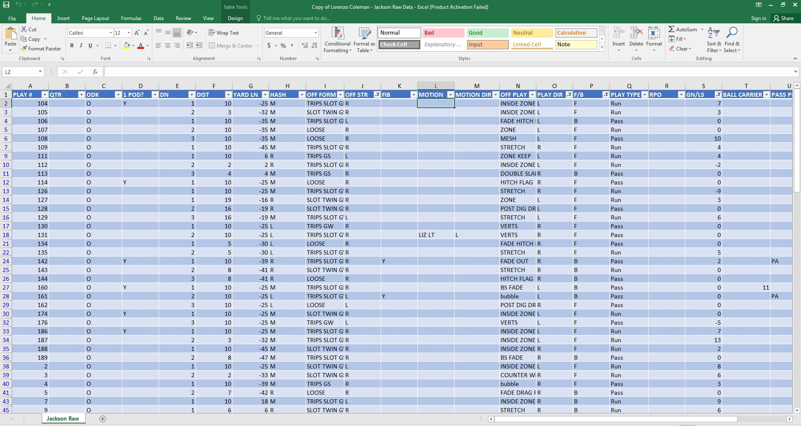

This project was how the first few weeks of the class were spent. The Mayfield football team had asked the Engineering class to look at data gathered from opposing teams during the pre-season games and use it to attempt to determine how they would play in the real games. Here is the data sorted out into an excel spreadsheet table:
What we did with the data was up to each student but I personally decided to try to make a chart of all the plays possible and given the conditions determine what plays are likely to executed.
I didn't get an example photo though as I didn't get very far due to time constraints and how little I knew about how to use Excel spreadsheets.